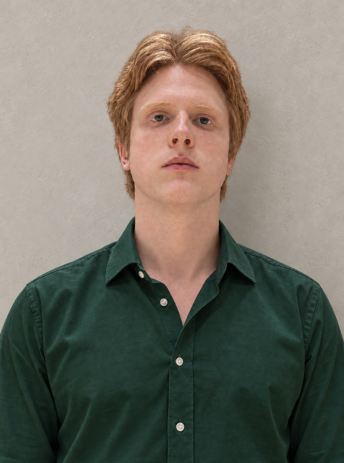
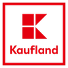
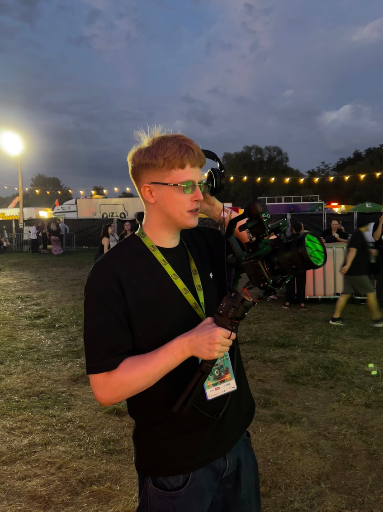
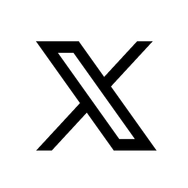

PORTFOLIO
CREATIVE COPYWRITER /
SOCIAL MEDIA CREATIVE
Wiktor
Szczepaniak
7 lat doświadczenia w SM.

MARKI OBSŁUGIWANE PODCZAS MOJEJ PRACY W AGENCJI AKK2

Projekty
Case Studies
BRAND HERO
Bobbie for Shell Eco-marathon
Brand hero stworzony od podstaw. Tone of Voice i komunikacja, która przełożyła inżynieryjny żargon na angażujący język studentów z Azji, Europy, Afryki i obu Ameryk.
Nagrania również realizowane były na różnych kontynentach.
KAMPANIA I JEJ WYNIKI W PIGUŁCE
KAMPANIA 360°
Smak Nostalgii
Big Idea 360° która przełożyła nostalgię za latami 90. na angażujące formaty nie tylko w social mediach. Komunikacja opierała się m.in. na estetyce kultowych teleturniejów i retro prasy.
Mieszanka kiczu i niepowtarzalności, dokładnie jak lata 90.
ZOBACZ FILM NA YOUTUBESOCIAL MEDIA / NETFLIX
Zaangażowanie
Tworzę posty, które realnie angażują odbiorców i wykorzystują aktualne dla nich trendy, wydarzenia, a także tematy, z którymi zwyczajnie relują.
Najwięcej doświadczenia posiadam w budowaniu komunikacji organicznej,
jednak content paidowy również nie jest mi obcy.
31 komentarzy / 502 repostów / 8,2K udostępnień
42 komentarzy / 416 repostów / 2,4K udostępnień
O mnie
To ja!

Mam 27 lat z czego 7 lat spędziłem pracując w agencji przy copywritingu, kreacji i w szczególności social mediach.
Prowadziłem nie tylko profile największych polskich marek (takich serio dużych, obiecuję), ale mam też doświadczenie w projektach globalnych.
Tworzę briefy, wymyślam content, koncepty kreatywne, big ideas, parasole, scenariusze, moderuje, nagrywam, montuje i publikuję. Staram się robić wszystko, czego akurat potrzebuje dana marka.
WIKTOR SZCZEPANIAK
Specjalizacje
Copywriting
Tworzę angażujące teksty, które docierają do ludzi. Od krótkich copy na SM, aż po scenariusze.
*AFERA CZEKOLADKOWA*
Social Media
Projektuję spójną komunikację dla konkretnych kanałów. Tworzę posty, które realnie angażują.
Koncepty kreatywne
Opracowuję koncepcje kampanii, które wyróżniają się na tle konkurencji.
RELACJE Z EVENTÓW
Formaty video
Kompleksowe relacje z eventów realizowane przeze mnie lub profesjonalną ekipę pod moim nadzorem kreatywnym.
Łódź Summer Festival
Pol’and’Rock Festival
Shell Eco-marathon ASIA/EU/NA
Finał WOŚP
W tym między innymi relacje z:
Łódź Summer FestivalGreat SeptemberMoonfest by Julia Żugaj
WSPÓŁPRACE
Briefing i współprace z influencerami
Współprace obejmujące briefing, copywriting, akceptacje materiałów, nagrania na żywo i nadzór dalszej postprodukcji oraz publikacji.
KONCEPTY KREATYWNE
Big Idea
Wypracowanie parasolu komunikacyjnego dla 4 zupełnie różnych festiwali odbywających się w tym samym czasie.
Claim wypracowany dla dalszej komunikacji piwa Žatecký Letký Pils - „Letky pils, a pełen smaku”.
Zobacz postRegularny format SM edukujący o nowej aplikacji i jej codziennej funkcjonalności, przy jednoczesnym zaangażowaniu odbiorcy.
Zobacz postCOMMUNITY
Moderacja
Zawsze dobieram Tone of Voice odpowiedni do prowadzonego przeze mnie profilu marki. Mam doświadczenie w prowadzeniu moderacji od bankowości, przez platformy streamingowe aż po branżę piwną.
*Śmieszny fakt (jajcarski):
Byłem moderatorem 24-godzinnego streama, na którym przez 24h nie działo się nic poza stojącym, wielkim jajem.
SOCIAL MEDIA
Social Media
Przez te 7 lat zdobyłem doświadczenie w copywritingu i tworzeniu kampanii dla:

X’aSOCIAL MEDIA
Tone of Voice
Dobieram Tone of Voice odpowiedni dla brandu i platformy, a doświadczenie zdobyłem prowadząc social media m. in. dla:
SOCIAL MEDIA
RTMy i okazje
Aktywnie wyłapuję aktualne tematy i trendy, które mogą zainteresować odbiorców, a jednocześnie da się je zgrabnie połączyć z marką.
polubień / 4 komentarzy
Zobacz post ↗polubień / 82 komentarzy
Zobacz post ↗polubień / 25 komentarzy
Zobacz post ↗RTMY I OKAZJE
Konkursy
Dodatkowo posiadam duże doświadczenie w organizowaniu konkursów. Wiem jak sprawić, by ludzie się nimi faktycznie interesowali.
polubień / 856 komentarzy
Zobacz post ↗polubień / 919 komentarzy
Zobacz post ↗